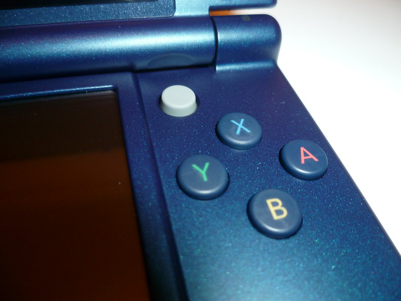

1 mars 2015
Test de la New Nintendo 3DS XL

Quelles sont mes premières impressions ?La 3D est meilleure ! Comme Nintendo le met en avant, l'effet 3D/stroboscopique est amélioré, notamment grâce à la présence d'un capteur infrarouge permettant le suivi du visage.
La fonctionnalité peut sembler gadget, mais cela fonctionne plutôt bien.
La luminosité est désormais ajustée automatiquement, toujours grâce au capteur infrarouge, cette option est bien entendu désactivable.
Parmi les nouveautés figurent les nouveaux boutons : ZL et ZR au dos, ainsi que le Stick C remplaçant le Circle Pad. Après avoir essayé avec Smash Bros, je trouve l'utilisation du stick assez agréable, celui-ci se manipule un peu comme le trackpoint des Thinkpad (vous savez, le stick des IBM/Lenovo). Un "trou" a d'ailleurs été prévu pour permettre d'éviter la collision directe entre le doigt et la barre de la New 3DS.Cette New 3DS inaugure aussi l'arrivée des amiibo, les figurines NFC de Nintendo.
Contrairement à la Wii U, le récepteur NFC se situe sous l'écran tactile de la New 3DS.
La mise à jour 1.0.5 de Smash Bros permet d'ors et déjà d'utiliser ses amiibo et ainsi prolonger l'expérience des personnages débutée sur la Wii U.
Pour les 3DS classique, un récepteur NFC est prévu dans l'année par Nintendo, celui-ci fonctionnera grâce à la connexion infrarouge présente.
(Au passage on notera que le logo de la New 3DS et amiibo sont similaires).
La disposition des LEDs, connecteurs et boutons a aussi été revue. Les boutons Start et Select retournent sous les boutons X/Y/A/B (qui arborent désormais les couleurs de la Super Nintendo).
Le bouton Home est aussi plus agréable à utiliser, la pression se fait plus facilement. Les LEDs sont désormais réunies en bas au même endroit.
Le slider du volume se trouve maintenant sur la partie supérieure, à l'opposée du slider 3D. Je le trouve moins accessible, c'est dommage. Le commutateur Wi-Fi disparait, celui-ci est remplacé par une option dans les paramètres rapides de la New 3DS.
Le bouton d'allumage se situe maintenant sur la tranche du bas, c'est une option discutable, car celui-ci peut être actionné sans le vouloir (dans un sac, ou encore en retirant la coque arrière). Le logement du style et de la cartouche 3DS passent en bas ce qui est aussi peut pratique comparé aux anciens modèle. Il était plus naturel de retirer le stylet par le haut ou le côté.La migration des données de son ancienne 3DS vers la New 3DS est laborieuse, je me souviens encore de la migration 3DS vers 3DS XL qui se faisait uniquement via Wi-Fi.
Ici Nintendo a accéléré le processus en permettant la copie des données sur la carte SD.
Cela reste toujours long, il faut mettre à jour les 2 consoles, se relier à Internet, valider tout un tas d'option de chaque coté. Mais une fois terminé on retrouve toutes ses données ainsi que la même présentation sur la New 3DS comme on l'avais laissé auparavant.
Rien à dire côté sonore, je n'ai pas noté de différence que ce soit avec les haut-parleur ou un casque.
Comme la 3DS XL/2DS, Nintendo fournis ses consoles sans chargeur, à vous de l'acheter en plus ou de récupérer celui de votre modèle précédent.
Dans la boite on retrouve par contre toujours les cartes de réalité augmentée ainsi que les manuels d'utilisation et guide rapide.
Toutes ces nouveautés apportés par Nintendo montrent la convergence souhaitée entre la Wii U et la 3DS. La New 3DS possède désormais les mêmes touches ainsi que la fonction amiibo que la Wii U.
Cette version intermédiaire pourrait s'apparenter à la DSi, Nintendo cherche à peaufiner sa console en apportant des fonctionnalités et en profite pour renouveler ses accessoires (coques, support de chargeur).
Des jeux sont dors et déjà compatibles avec toutes ces nouvelles fonctionnalités. J'ai déjà mentionné Smash Bros, mais il y a aussi Majora Mask 3DS ainsi que Monster Hunter 4 Ultimate.
Je ne pense pas que Nintendo ou des éditeurs tiers développeront de jeux uniquement compatible New 3DS afin d'éviter une fragmentation et entrainer une confusion chez le public déjà perdu dans le nom des consoles, on profitera juste d'une expérience de jeu améliorée ;)
- Une meilleure 3D ;
- Enfin un second stick analogique !
- Processeur plus rapide ;
- Les amiibo compatibles.
- Le transfert des données entre 3DS et New 3DS laborieux ;
- Le bouton d'allumage mal situé ;
- Pas de coque interchangeable sur le modèle XL ;
- Une microSD difficilement accessible.
Faites toujours bien attention lorsque vous acheter une console portable de bien vérifier si vous n'avez pas de pixels morts ou de rayure, je n'ai pas fait tout de suite attention mais j'ai une petite rayure en bas à gauche de l'écran supérieur :( Ce n'est pas gênant dans mon cas, mais tout de même, j'ai déjà eu des pixels mort sur la DS Lite, alors pensez à tester votre modèle en magasin et faites jouer la garantie pour le moindre défaut suspect !
Vous pouvez retrouver l'ensemble des photos de ma New 3DS sur Flickr, relire mon test de la toute première 3DS, ou découvrir mes autres tests.
Commentaires 3